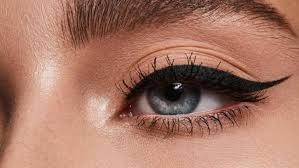

This is to help you get the perfect winged eyeliner everytime!

What You Need:
Felt Tip Eyliner
Mirror
Good Lighting
Optional: Liquid or Gel Liner
Directions:
Use a mirror in a well-lit area so you can clearly see what you are doing
What you will be doing is using your felt tipped eyeliner to place pin sized dots along your lash line in order to guide the direction of your wing
Your first dot will be directly above the tearduct of your eye
Make your second dot just above the start of your iris
Make your third dot above your pupil
Your fourth dot will be at the end of your iris
Make your fifth dot at the corner crease of your eye
Your last dot should line up with the end of your eyebrow
Once you have all six dots, you will lightly connect the top of all the dots creating one continuous line
Next you will connect the end of the line back to the corner of your eye
Now, you should have a "box" that you can fill in. You can do this with either your felt tip eyeliner OR you can use the optional gel liner for a darker wing
Repeat on your other eye for perfect winged eyeliner